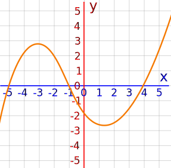
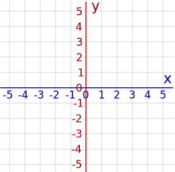
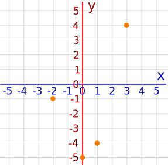
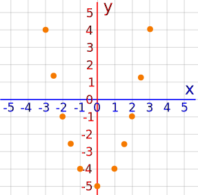
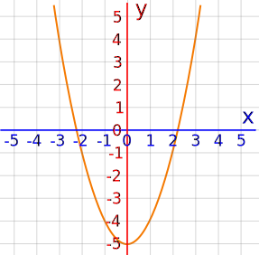
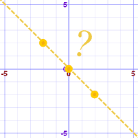
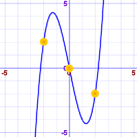

Function Graph

An example of a function graph
How to Draw a Function Graph
First, start with a blank graph like this. It has x-values going left-to-right, and y-values going bottom-to-top:

The x-axis and y-axis cross over
where x and y are both zero.
Plotting Points
A simple (but not perfect) approach is to calculate the function at some points and then plot them.
A function graph is the set of points of the values taken by the function.
Example: y = x2 − 5
Let us calculate some points:
| x | y = x2−5 |
|---|---|
| −2 | −1 |
| 0 | −5 |
| 1 | −4 |
| 3 | 4 |
And plot them like this:

Not very helpful yet. Let us add some more points:

Looking better!
We can now guess that plotting all the points will look like this:

A nice parabola.
We should try to plot enough points to be confident in what is going on!
Example: y = x3 − 5x
With these calculated points:
| x | y = x3−5x |
|---|---|
| −2 | 2 |
| 0 | 0 |
| 2 | −2 |
We might think this is the graph:

But this is the real graph:

Complete Graph
For a graph to be "complete" we need to show all the important features:
- Crossing points
- Peaks
- Valleys
- Flat areas
- Asymptotes
- Any other special features
This often means thinking carefully about the function.
Example: (x−1)/(x2−9)
On the page Rational Expressions we do some work to discover that the function:
- crosses the x-axis at 1,
- crosses the y-axis at 1/9,
- has vertical asymptotes (where it heads towards minus/plus infinity) at −3 and +3
The result is that we can make this sketch:

Sketch of (x−1)/(x2−9) from Rational Expressions.
Using Calculus
We can also find Maxima and Minima using derivatives :

Tools to Help You
- The Function Grapher can help you. Enter the equation as "y=(some function of x)". You can use zoom to find important points.
- If you can't write the equation as "y=(some function of x)", you can try the Equation Grapher, where you enter equations like "x^2+y^2=9" (meaning x2+y2=9).
But remember they are just a help! They are only computer programs, and could easily miss some important thing on the graph, or not plot something correctly.
Note: you may hear the phrase "satisfy the equation", which means where the equation is true.